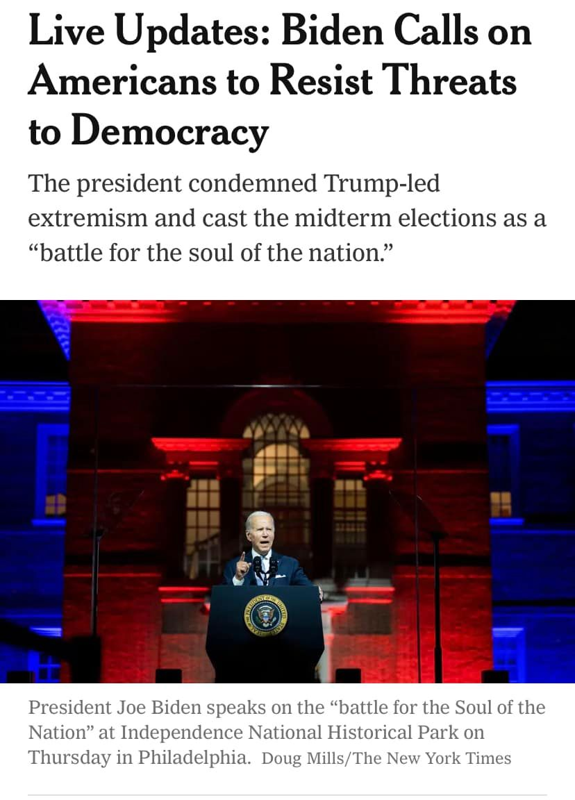

Mobile uploads
I am a leftist and don’t believe I’ve ever voted for a Republican. But this is just propaganda meant to manipulate Democrats through fear of fellow Americans. This internal divisiveness is what is actually ripping this country apart. Not “MAGA Republicans.”
He’s just saying this because he’s afraid he’s going to lose the midterms for the Democrats.